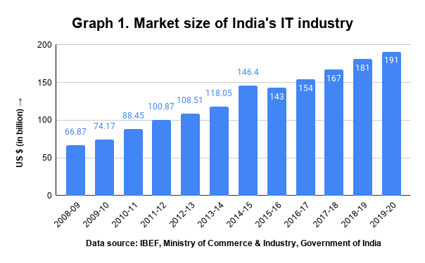

The IT and BPM industry's revenue is estimated at US$194 billion in FY 2021, an increase of 2.3% YoY. The domestic revenue of the IT industry is estimated at US$45 billion and export revenue is estimated at US$150 billion in FY 2021. The IT industry employed almost 2.8 million employees in FY 2021.
They help you gain access to the internet so that you can do whatever it is you want to do online. Developers are an important part of this system because they design and develop apps or programs that enable people to use technology for their intended purposes.
The information technology (IT) industry in India has played a key role in putting India on the global map. The IT industry in India has been one of the most significant growth contributors for the Indian economy. The industry has played a significant role in transforming India’s image from a slow-moving bureaucratic economy to a land of innovative entrepreneurs and a global player in providing world-class technology solutions and business services. The industry has helped India transform from a rural and agriculture-based economy to a knowledge based economy. Information Technology has made possible information access at gigabit speeds. It has made tremendous impact on the lives of millions of people who are poor, marginalized and living in rural and far flung topographies. Internet has made revolutionary changes with possibilities of e-government measures like e-health, e-education, e-agriculture, etc. Today, whether its filing Income Tax returns or applying for passports online or railway e-ticketing, it just need few clicks of the mouse. India’s IT potential is on a steady march towards global competitiveness, improving defense capabilities and meeting up energy and environmental challenges amongst others. IT-ITeS sector in India, with the main focus on increasing technology adoption, and developing new delivery platforms, has aggregated revenues of USD 88.1 billion in FY2011, while generating direct employment for over 2.5 million people. Out of 88.1 billion, export revenues (including Hardware) has reached USD 59.4 billion in FY2011 while domestic revenues (including Hardware) of about USD 28.8 billion.
Government Initiatives:
After the economic reforms of 1991-92, major fiscal incentives provided by the Government of India and the State Governments, like, liberalization of external trade, elimination of duties on imports of information technology products, relaxation of controls on both inward and outward investments and foreign exchange, setting up of Export Oriented Units (EOU), Software Technology Parks (STP), and Special Economic Zones (SEZ), has enabled India to flourish and acquire a dominant position in world’s IT scenario. In order to alleviate and to promote Indian IT industry, the Government of India had set up a National Task Force on IT and Software Development to examine the feasibility of strengthening the industry. Venture capital has been the main source of finance for software industry around the world. In line with the international practices, norms for the operations of venture capital funds have also been liberalized to boost the industry. The Government of India is also actively providing fiscal incentives and liberalizing norms for FDI and raising capital abroad.